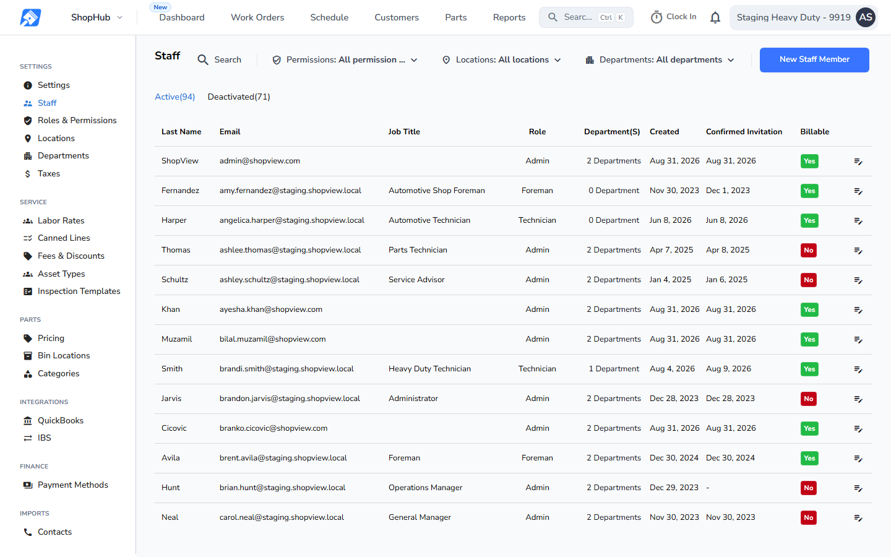
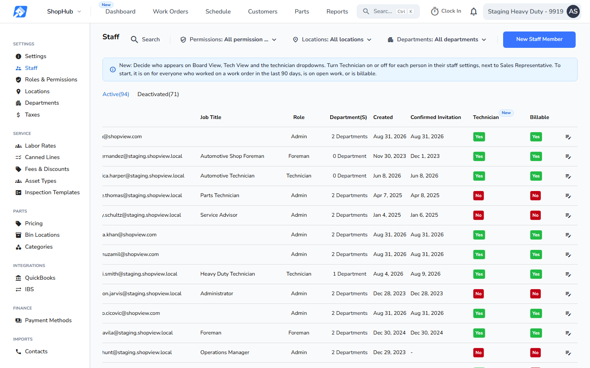

Settings, Staff, scrolled to the last columns. Every picture is a real screenshot at 1440 x 900. Before: production code (release v26.43.1). After: this build, after the release-day step has run on the demo data.
Production today (before)Staff list

Billable is the last column. There is no Technician column and no notice.
This buildNotice and Technician column

Notice, verbatim: "New: Decide who appears on Board View, Tech View and the technician dropdowns. Turn Technician on or off for each person in their staff settings, next to Sales Representative. To start, it is on for everyone who worked on a work order in the last 90 days, is on open work, or is billable."
No close button: it disappears for everyone on the "New" pill's end date.
Technician column, read-only and sortable, just left of Billable: Yes when the person's Technician toggle is on and their Time Clock is on, otherwise No. A deactivated person always shows No. It changes only through the staff window (page 2).
"New" pill at the top right of the Technician header. It goes away at 07:00 UTC on the seventh day after the release that ships this; the exact date is set when the release is scheduled.